I am currently a second-year Ph.D. student at the MMLab, The Chinese University of Hong Kong (CUHK), supervised by Hongsheng Li. I am also an ex-intern of AlibabaCloud, Shanghai AI Lab, and SenseTime Robotics Group.
I earned both my Bachelor's and Master's degrees from the South China University of Technology in 2021 and 2024, respectively, being advised by Lianwen Jin.
Research Interest: Interative Vision-Language Models, the Large-scale Video Generation Model, and the Intersection of Robotics. I am also deeply committed to contributing to open-source projects, believing they are a cornerstone for the sustainable growth of the AI community.
Email: wflin37@gmail.com
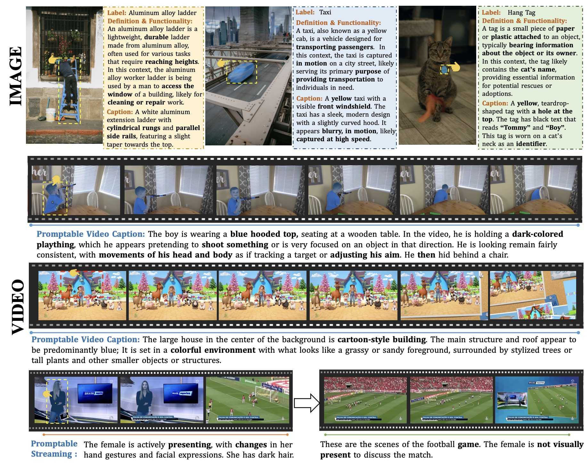
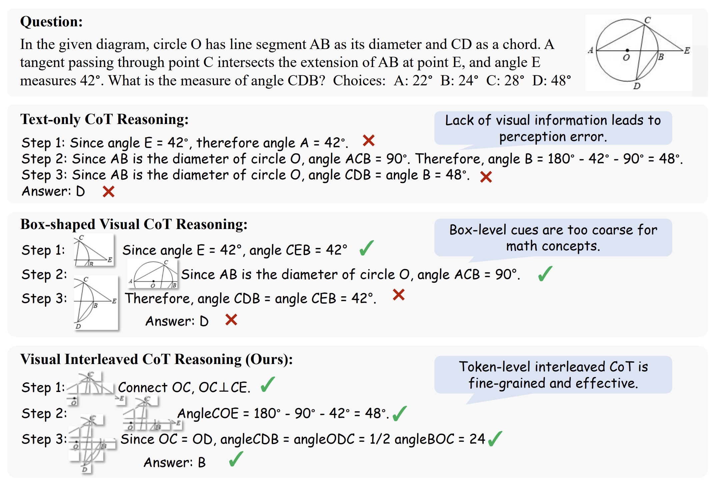
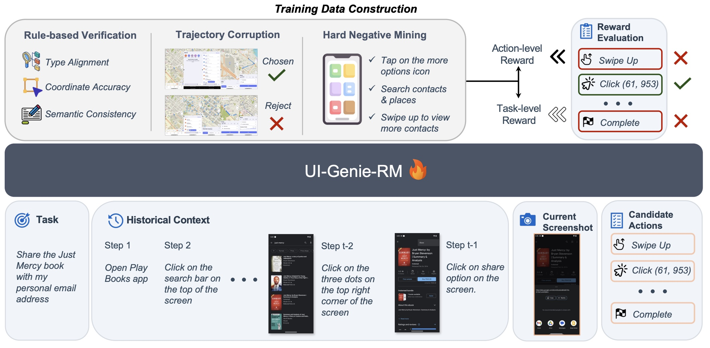
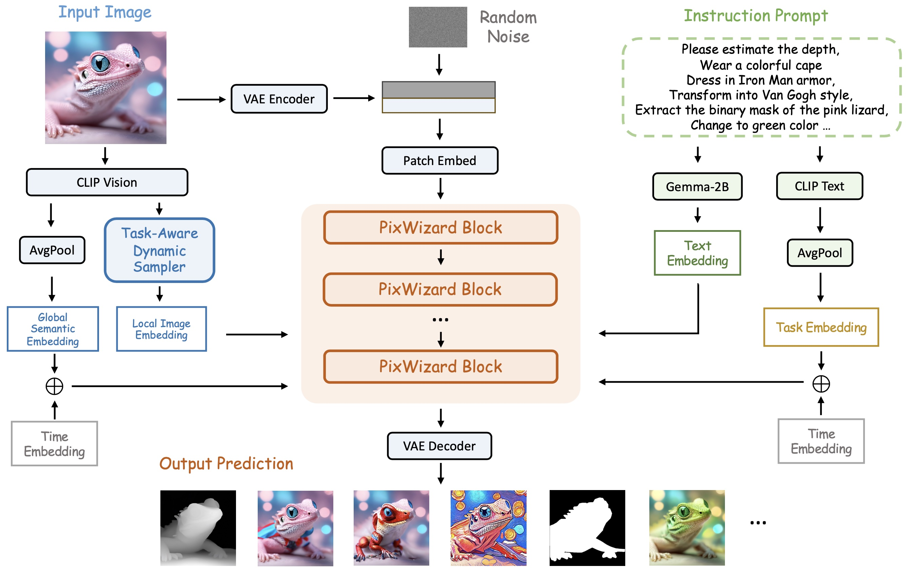
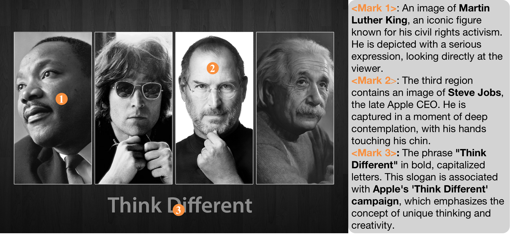
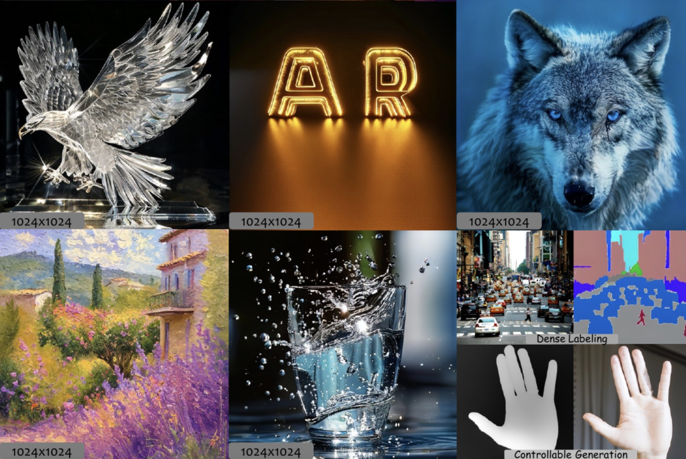
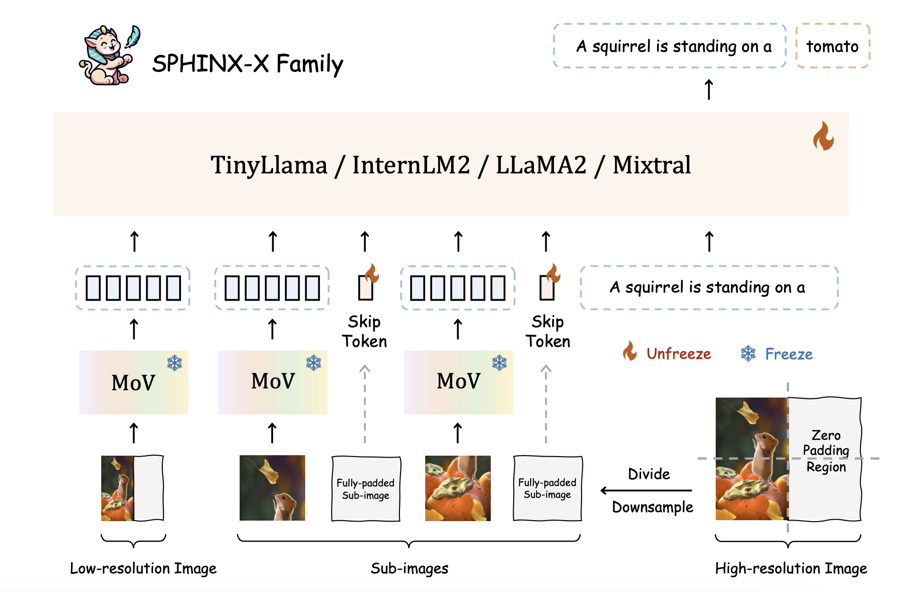
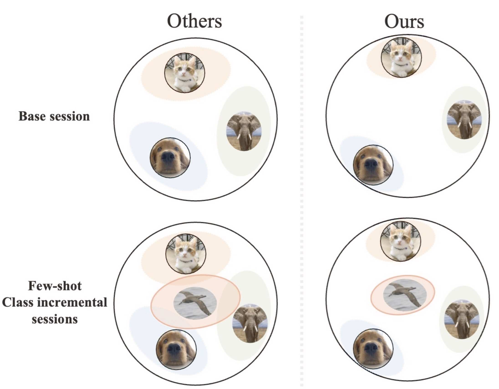
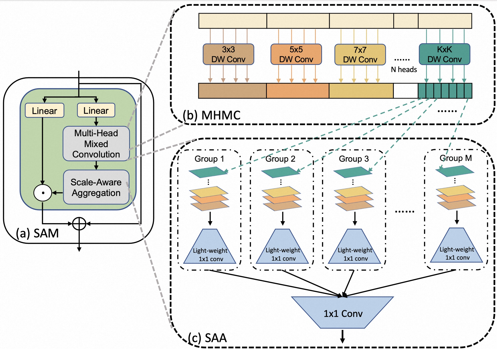
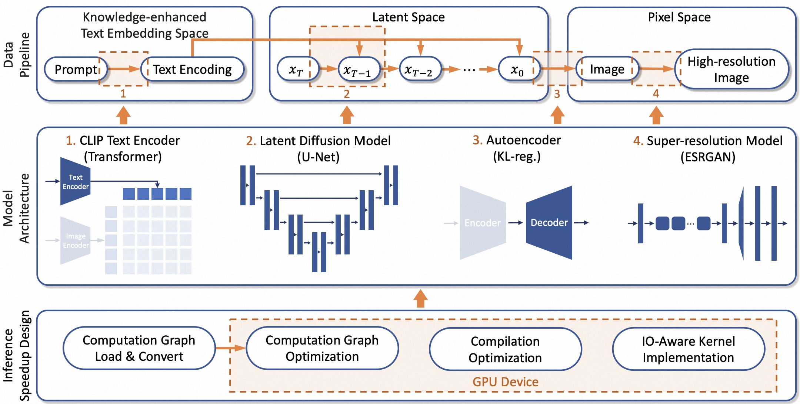
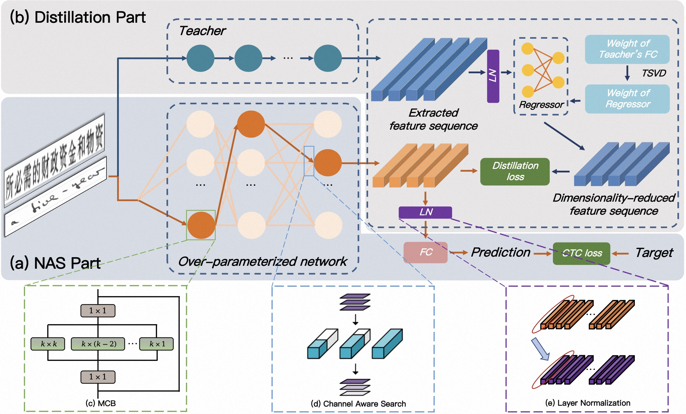
|
|
Template adapted from here.